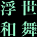
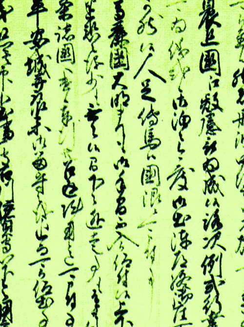

言語というのは、人間が用いる意志伝達手段であり、社会集団内で形成習得され、意志を相互に伝達することや、抽象的な思考を可能にし、結果として人間の社会的活動や文化的活動を支えている。
LAKUGO
The one as a language is the will vehicle man uses, and formation is acquired in the social group, and the case that will is communicated mutually and abstract consideration are enabled, and human social action and a cultural campaign are being supported as a result.

lakugo_PT
12/27